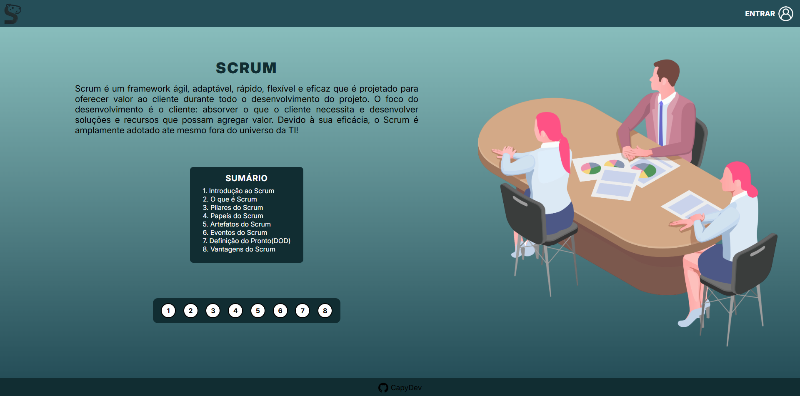
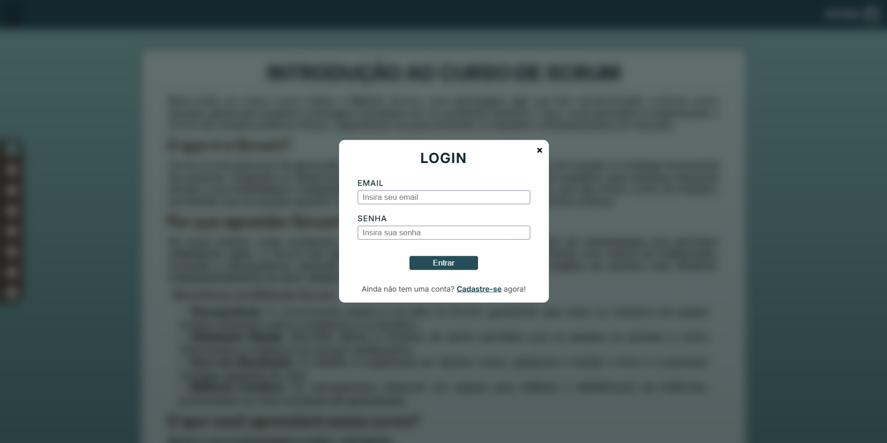
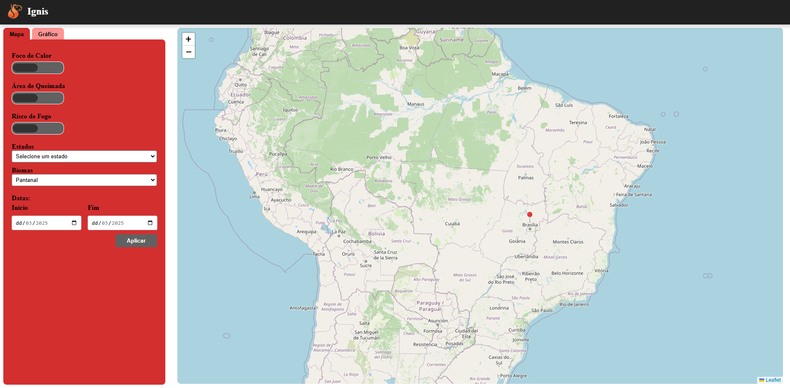
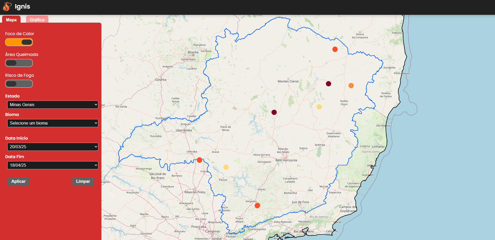
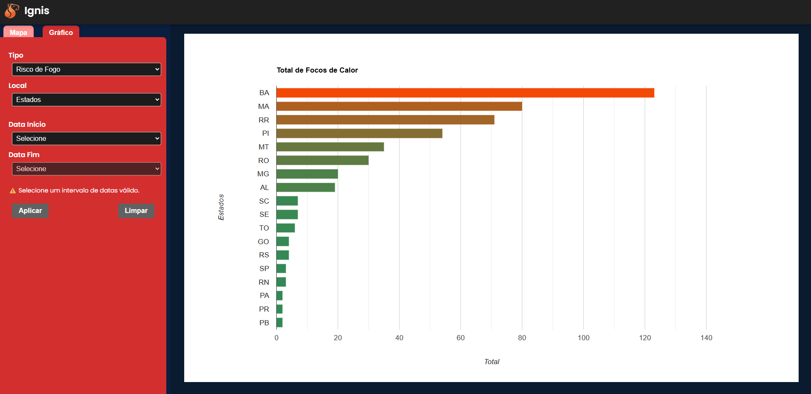
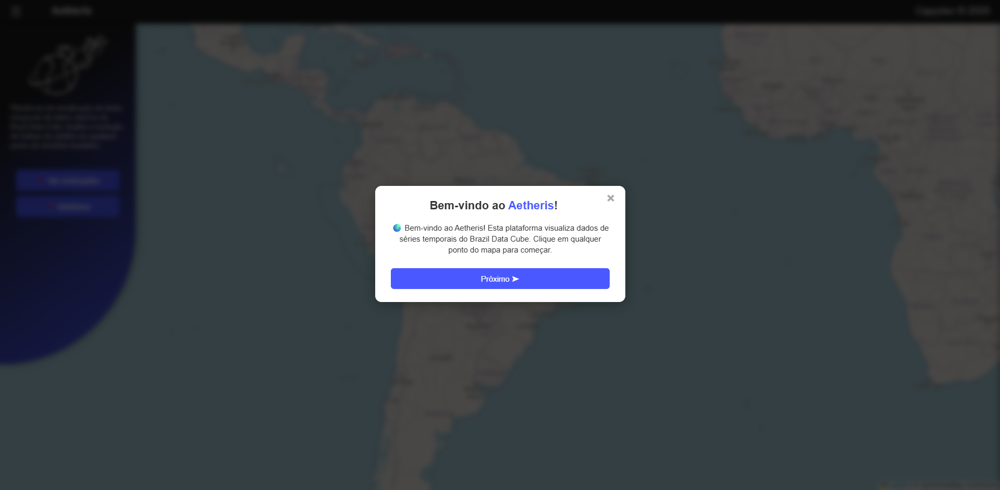
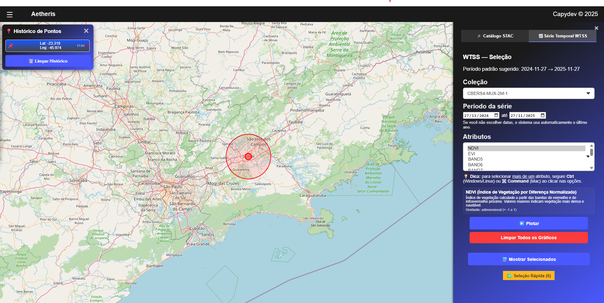
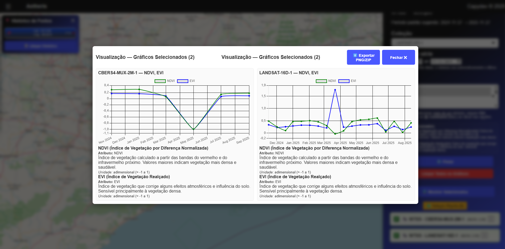

Projetos Acadêmicos (ABP) — CAPYDEV
Projetos acadêmicos desenvolvidos em equipe pela CAPYDEV utilizando a metodologia ABP (Aprendizagem Baseada em Projetos).
📋 Metodologia Scrum — Curso e Certificação
No primeiro semestre, a equipe CAPYDEV desenvolveu um projeto focado na metodologia ágil Scrum. O trabalho envolveu a criação de material didático, documentação de processos e a aplicação prática de sprints, cerimônias e artefatos Scrum em contexto real de desenvolvimento. O site desenvolvido era um curso sobre o Scrum, onde o usuário poderia criar uma conta e acessar o conteúdo do curso, além de realizar quizzes para testar seus conhecimentos, e se caso tivesse exito em 80% das questões, gerava um certificado.
Minhas contribuições
- Desenvolvimento do frontend em HTML, CSS e JavaScript.
- Integração entre frontend e banco de dados.


🔥 Projeto Ignis — Análise Geoespacial de Incêndios
Plataforma web completa para análise de dados geoespaciais sobre risco de fogo, focos de calor e áreas queimadas no Brasil. Sistema com mapa interativo, filtros por região e período, e visualização de dados do INPE em tempo real.
Minhas contribuições
- Desenvolvimento do Backend TypeScript.
- Integração frontend e backend.
- Implementação dos filtros do mapa.
- Criação e tratamento de arquivos GeoJSON para visualização no mapa.
- Consultas geoespaciais utilizando PostGIS.



🚀 Aetheris – Aplicação Web para a visualização e comparação de dados geo-espaciais.
Plataforma web para a analise dos dados de satelites públicos todos consumindo a API do INPE
Minhas contribuições
- Desenvolvimento do Backend em TypeScript.
- Estudo de funcionamento da API do INPE.
- Criação de rotas e controllers para consumo dos dados do INPE.
- Integração frontend e backend.
- Criação dos gráficos para visualização dos dados dos satélites.




💊 Projeto Salus 💊
Plataforma integrada para monitoramento e gerenciamento de medicamentos, utilizando aplicação mobile, backend em nuvem e dispositivos IoT. O sistema auxilia pacientes e responsáveis no acompanhamento da administração de medicamentos, promovendo maior autonomia, segurança e qualidade de vida.
Minhas contribuições
- Desenvolvimento do frontend em React-Native e TypeScript.
- Desenvolvimento do protótipo embarcado em C++ para ESP32.
- Integração Backend e ESP32
- Implementação de funcionalidades do sistema.